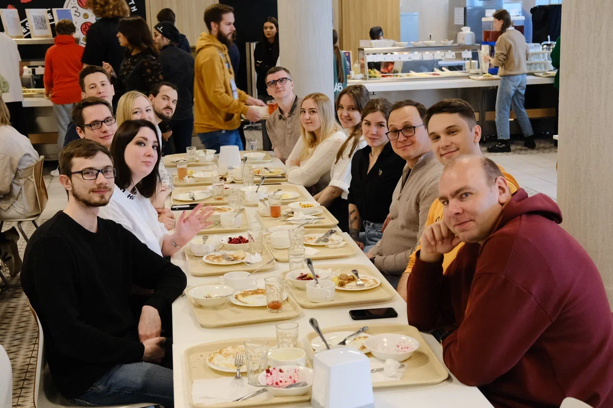

Ты стоишь, пытаясь отыскать хотя бы один кусочек вчерашнего дня, одно воспоминание, которое даст тебе ответ. Всё, что ты ощущаешь — это пустота, которая как воронка засасывает твои мысли. Ты закрываешь глаза и пытаешься представить, что было вчера. Мелькают кадры — размытые, как фотографии, сделанные в спешке. Какие-то люди, лица, но они все чужды тебе, как будто ты видишь их в первый раз. Тонкие полоски света в темных углах, смех, запах пива... Но всё это не складывается в картину. Тебе не удаётся вытянуть ни одно ясное воспоминание, ни один четкий момент. Только обрывки, фрагменты, которые не имеют смысла.
